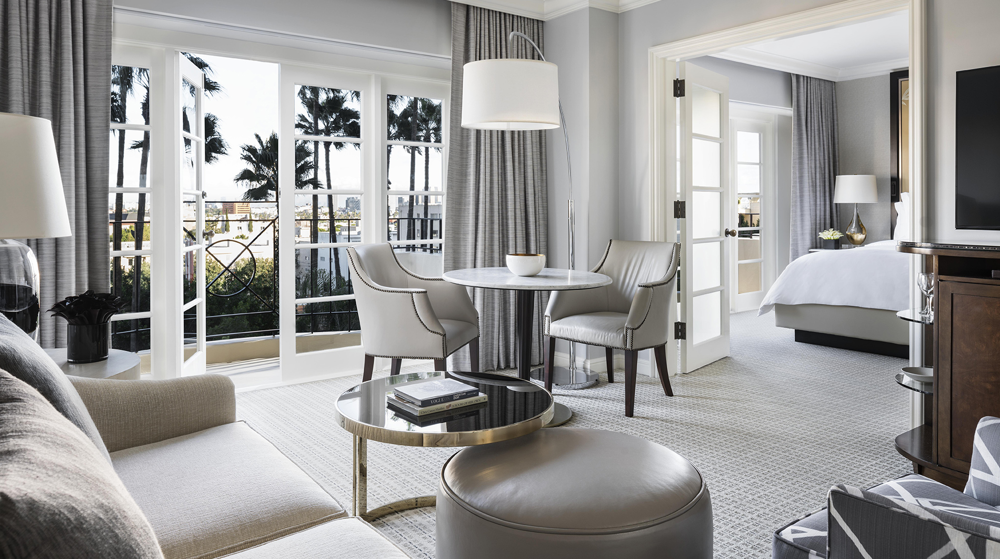
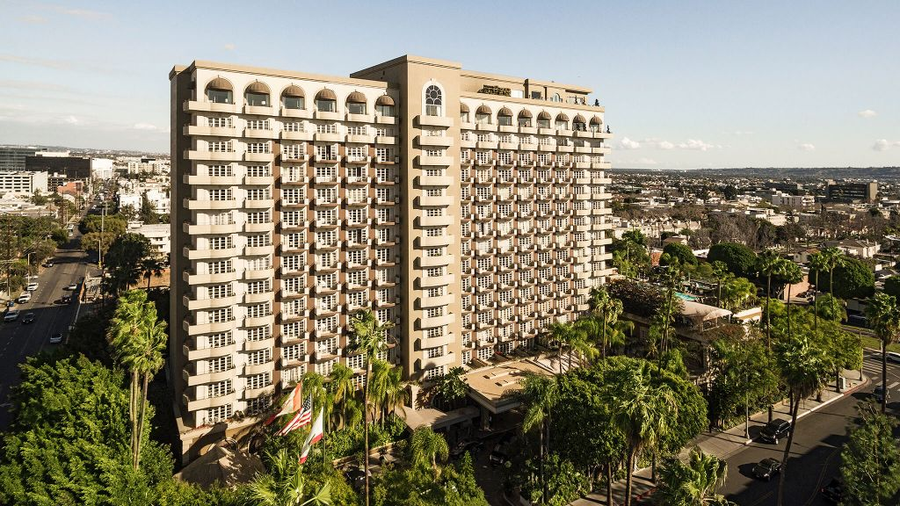
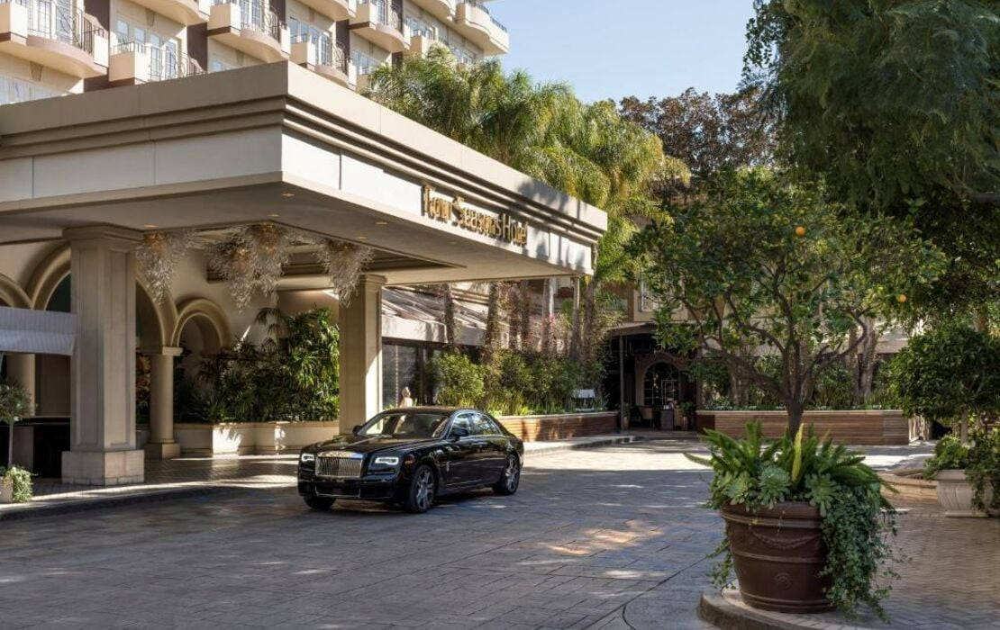

Beverly Hills Favorite
Four Seasons Los Angeles at Beverly Hills is the reliable high-touch LA stay when ease matters most.
Four Seasons Los Angeles at Beverly Hills is one of those hotels that makes sense for a lot of different clients because the service culture is so dependable. It is not the flashiest Beverly Hills option, but for families, entertainment clients, wellness stays, and people who simply want everything handled smoothly, it is a very strong LA base.
What makes it unique
It is the comfort pick: polished service, strong suites, wellness, and an easy Beverly Hills-adjacent location.
This is where I would place a client who wants the city to feel simple. Drivers, restaurant timing, wellness, pool time, family logistics, business meetings, and last-minute requests are all easier when the service team is built for that kind of pace.
Best For
Easy high-touch LA
Best for clients who want a polished base with fewer surprises.
Known For
Service and wellness
The Four Seasons service culture, spa, pool, and suite comfort are the draw.
Dining
Culina and lounge energy
Strong for easy hotel dining, private meals, and relaxed LA evenings.
Client Type
Families and business-luxury travelers
Great for clients who want Beverly Hills access without overcomplicating the trip.



Rooms and suites
The suite categories are especially useful for families, longer stays, and clients who need room to work, host, or decompress. This is not the most theatrical LA hotel, but it is one of the easier properties to use when comfort and service matter more than scene.
Dining and activities
Culina is the main dining anchor, with the hotel also working well for private meals, wellness appointments, pool time, Beverly Hills shopping, West Hollywood dinners, studios, Malibu day trips, and family-friendly LA itineraries.
My honest take
This is the practical luxury pick. It may not be as iconic as The Beverly Hills Hotel or as secluded as Hotel Bel-Air, but if the client wants high-touch LA with strong service and low friction, I would absolutely keep it in the conversation.